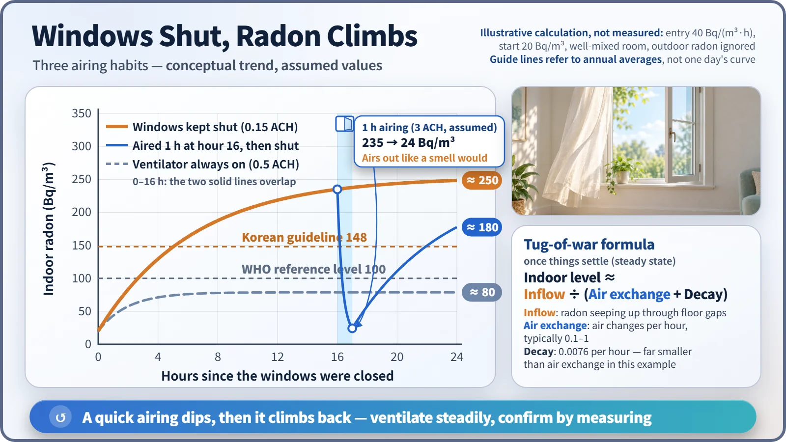
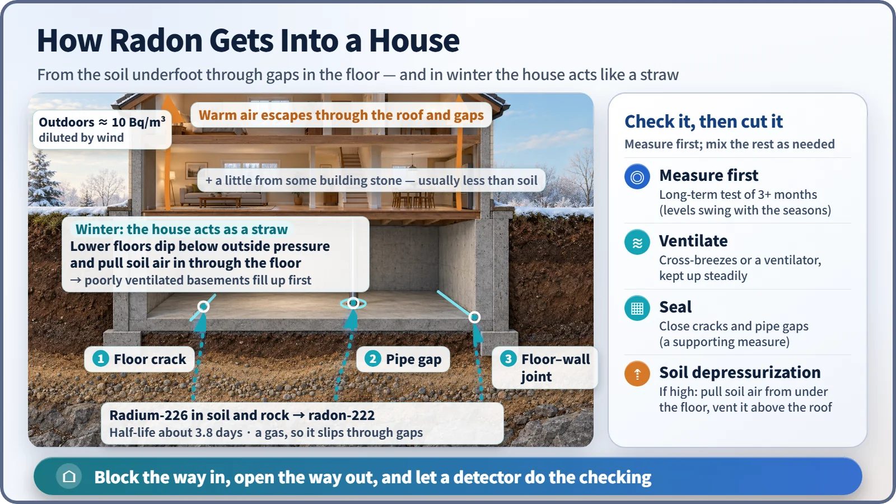

Nuclear & Radiation Basics · 020
Like Last Night's Fish Dinner Hanging in the Air — Why Radon Is an Indoor Air Problem
Radon has a way in, builds up when trapped and leaves when air moves through, just like a cooking smell, except your nose can't detect it.
Radon is a colorless, odorless radioactive gas that seeps out of the ground, slips into houses through floor gaps, and builds up when the air indoors isn't exchanged. The gas itself is mostly breathed back out; the lung dose comes from its short-lived decay products, which settle in the airways and emit alpha particles. Measuring and ventilating are the simple answers. [1]
A smell that hangs in a shut house
You pan-fried fish for dinner, and because it was cold, every window stayed shut. The next morning, anyone walking through the front door knows exactly what you ate. Then you throw the windows wide open for ten minutes, and it's as if it never happened.
Radon, a radioactive gas that the ground produces all on its own, behaves in a house almost exactly like that fish smell. It has a way in, it builds up when it's trapped, and it leaves when air moves through. There is one big difference: radon has no color and no odor, so your nose gives you no warning at all.
The one-line formula behind indoor radon
The amount of radon in a room is a tug-of-war between how much comes in and how much goes out. Radon concentration is measured in Bq/m³ (becquerels per cubic meter): the number of radioactive decays happening each second in one cubic meter of air.
(After enough time) indoor concentration ≈ inflow ÷ (air exchange rate + decay rate)
The air exchange rate is how many times per hour the air in a room is completely replaced; in an ordinary home it's around 0.1 to 1 time per hour. Radon's own decay rate is about 0.0076 per hour, practically zero next to ventilation. So in practice the indoor level is set by inflow divided by the air exchange rate. Triple the ventilation, and the concentration drops to roughly a third.

It's the fish-smell principle again. But once you shut the windows, radon keeps rising from the floor, and over a few hours the level climbs back. That's why steady ventilation matters more than one big airing.
The smell starts in the kitchen; radon starts under your feet
Radon (Rn-222) is born partway along the long, slow decay chain of uranium in the ground. Uranium-238 has a half-life of about 4.47 billion years, so a little of it is mixed into soil and rock almost everywhere. Through several steps it becomes radium-226, and when radium undergoes alpha decay, radon is born. [2]
Every other element in that chain is a solid metal, locked inside mineral grains. Radon alone is a noble gas that hardly bonds with anything, so it can slip out through the spaces between soil particles, and its half-life of about 3.8 days gives it time to reach the surface.
In open air the wind scatters it quickly, and outdoor levels average only about 10 Bq/m³. Outdoors, the air exchange rate is effectively infinite. The trouble starts when a house sits on top of that ground. [3]
Floor cracks, pipe gaps, and the straw effect
Radon's ways in are surprisingly humble: hairline cracks in a concrete floor, gaps around pipes and cables that pass through the floor, and the joints where floor meets wall. Basements and ground floors in direct contact with soil are affected most. Some building materials, such as certain stone, give off radon too, but usually the biggest share comes from the soil beneath the building.
In winter, a straw effect adds to this. As heated air rises and escapes through the upper part of the house, the pressure on the lower floors drops slightly below the pressure outside, which pulls soil air in through the floor. This is the stack effect, and it's one reason indoor radon tends to run higher in winter, when windows also stay shut. [1]

The culprit is radon's offspring
When you breathe in radon gas, you breathe most of it right back out. As a noble gas, it doesn't stick to the body.
The real problem is the progeny, the new atoms radon produces as it decays in the air: short-lived metal atoms such as polonium-218 (half-life about 3.1 minutes), lead-214, bismuth-214 and polonium-214. They attach to airborne dust or float on their own, and when you breathe, they settle on the walls of your airways. There, polonium-218 and polonium-214 emit alpha particles. [4]
Alpha particles are stopped by a sheet of paper outside the body, but deep in the lungs there's no skin to block them. An alpha particle travels only a few tens of micrometers in tissue and dumps all of its energy over that short distance, so the cells lining the airways take the full dose.
That's why the World Health Organization (WHO) ranks radon as the leading cause of lung cancer after smoking in many countries, and estimates that 3 to 14% of all lung cancers, depending on the country, are linked to indoor radon. Lung cancer risk rises by about 16% for every 100 Bq/m³ increase in long-term average concentration, and the risk is much greater when combined with smoking. [1]
Two numbers: 100 and 148
| Reference value | Level | Notes |
|---|---|---|
| WHO recommended reference level | 100 Bq/m³ | Where not feasible, not to exceed 300 Bq/m³ |
| South Korea guideline (Indoor Air Quality Control Act) | 148 Bq/m³ | Public-use facilities and new apartment buildings; new apartments tightened from 200 in July 2019 |
Don't read these numbers as a cliff edge. The risk is a probability that builds up gradually in proportion to average exposure over years and decades, and a reference level is closer to a traffic signal saying, "At this point, take steps to bring it down." [5]
Ask a detector, then open a window
Since radon has no smell, measuring is the only way to know. Levels swing from hour to hour and season to season, so a long-term test of at least three months (90 days or more) reflects the yearly average better than a test of a few days. Most homes come in below the reference levels, and even high results have simple fixes: [6]
- Open windows a few times a day for a cross-breeze, or keep a ventilation system running steadily.
- Seal floor cracks and gaps around pipes to narrow the way in.
- If levels are well above the reference, ask about a mitigation system that draws soil air from under the floor through a pipe and fan and vents it above the roof.
Key takeaways
Radon doesn't come from nuclear facilities; it comes from the ground beneath our feet. Indoor radon is set by inflow divided by ventilation, the lung dose comes from its decay products, and the answer is to measure, block the way in, and keep the way out open.